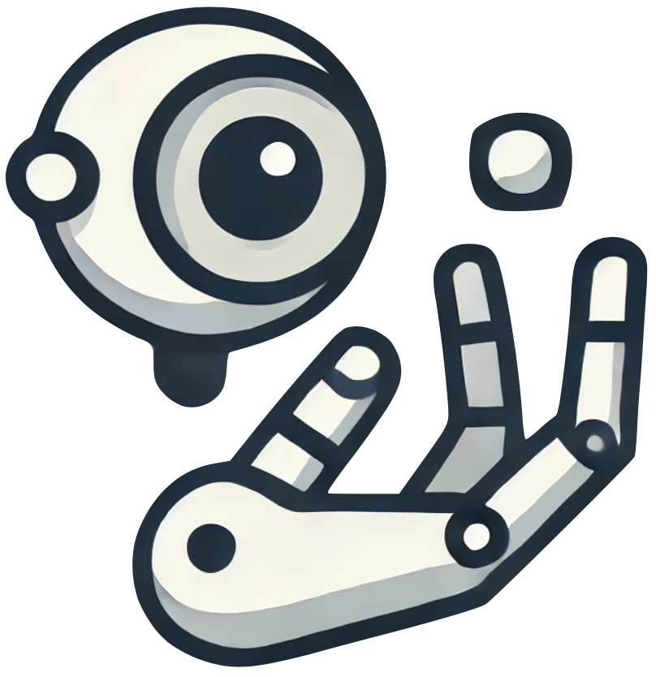
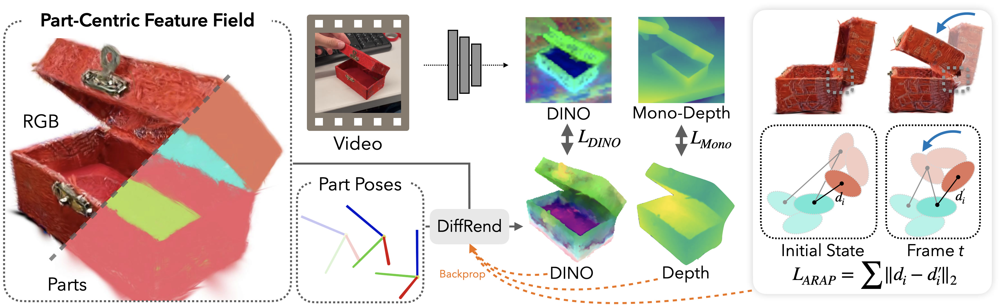
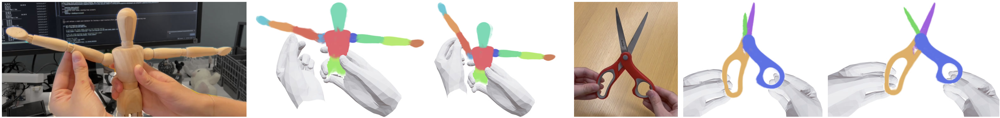

Robot See 👁️ Robot Do 🦾
Imitating Articulated Object Manipulation with Monocular 4D Reconstruction
UC Berkeley
CoRL 2024 (Oral)


TL;DR: Robot See Robot Do uses a 4D Differentiable Part Model (4D-DPM) to reconstruct moving object parts from a monocular video using a scanned object model, then imitates these part motions with a robot.
Humans imitate manipulation by watching object motion, not hand motion. RSRD does the same.
This enables imitation from a single video robust to orientation and across morphologies

4D Part Reconstruction
RSRD takes in 1) a multi-view object scan and 2) a monocular demonstration video. These smartphone-captured inputs are used to generate these 4D reconstructions:
These 4D gaussian splat animations are rendered in-browser! If you think that's cool, check out Viser!
Robot Demonstration Re-Mapping
After recovering 3D part motion, RSRD plans grasps and robot motions to reproduce the 4D reconstructions
These can be physically executed on a real robot to produce the demonstrated motion:
RSRD's visual imitation is object-centric, allowing it to adapt to different object orientations with the same demo:
180 degrees rotated
45 degrees rotated

How it works
4D Differentiable Part Models
4D-DPM decomposes objects into parts with GARField, and trains part-centric feature fields on top of these. Each part is assigned a trainable 6D pose parameter which is optimized with gradient descent. DINO improves dramatically over photometric tracking as a more robust feature target, and allows reconstructing a broad range of open-world objects.
Because 4D-DPM uses gradient descent, any differentiable prior is easily incorporated like temporal smoothness and rigidity.

Robot Execution
RSRD detects human hands with HaMeR and aligns them with the 4D reconstruction. RSRD only uses hands as a soft cue to bias grasp planning towards parts touched by the human, and can deviate from this if kinematically required.
RSRD plans bimanual motions to grasp and manipulate parts in a pose-agnostic way, allowing it to adapt to any kinematically
Citation
If you use this work or find it helpful, please consider citing: (bibtex)
@inproceedings{kerr2024rsrd,
title={Robot See Robot Do: Imitating Articulated Object Manipulation with Monocular 4D Reconstruction},
author={Justin Kerr and Chung Min Kim and Mingxuan Wu and Brent Yi and Qianqian Wang and Ken Goldberg and Angjoo Kanazawa},
booktitle={8th Annual Conference on Robot Learning},
year={2024},
url={https://openreview.net/forum?id=2LLu3gavF1}
}